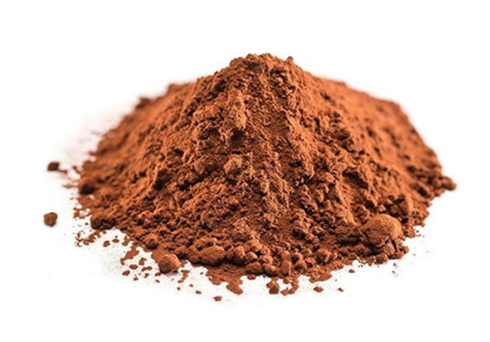

Poudre de cacao Bio
La poudre de cacao est obtenue à partir des fèves de cacao fermentées, séchées, torréfiées et décortiquées.
Les éclats sont broyés pour produire une masse de cacao. Cette masse est ensuite pressée pour séparer le beurre de cacao du tourteau solide.
Le tourteau est finalement broyé en une fine poudre : la poudre de cacao.
Avec notre poudre de cacao, vos pâtisseries, pâtes à tartiner, barres, glaçages, muesli, glaces, yahourts, boissons et chocolat prennent une riche note de cacao et une couleur typique.
Nous utilisons principalement des fèves de cacao Bio du Cameroun.
Étapes de transformation
- Fermentation : Après récolte, les fèves sont fermentées pendant plusieurs jours pour développer les arômes du cacao.
- Séchage : Les fèves fermentées sont ensuite séchées naturellement au soleil afin de réduire leur taux d’humidité.
- Torréfaction : Les fèves sèches sont torréfiées pour exalter leur parfum et détruire les éventuels germes.
- Décorticage et concassage : On retire la coque des fèves pour ne garder que les éclats appelés "nibs".
- Broyage : Les nibs sont broyés à chaud pour obtenir une pâte appelée masse de cacao.
- Pressage : Cette masse est pressée pour séparer le beurre de cacao du tourteau.
- Broyage final : Le tourteau sec est broyé jusqu’à obtention d’une poudre fine : la poudre de cacao.

Caractéristiques
- Fortement dégraissée (10-12% de matières grasses) ou faiblement dégraissée (20-22% de matières grasses)
- 100% naturel, sans sucre ajouté ni conservateur
- Teneur en cadmium : Regular ou Low Cad
- Sacs de 25 kg ou big bags de 750 kg